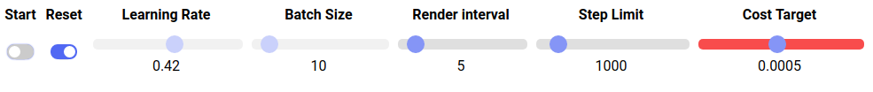

Explaining neural network concepts through an interactive visualization
Using a neural network for complementary color prediction
Abstract
We explore visualization as a mean to help an user understand a training method of a Neural Network. By allowing him/her to interact with the neural network training procedure, changing parameters and viewing results on the fly. Most machine learning and neural network methods are opaque and hard to understand by the public in general. We explore this visualization as a way to teach the techniques and concepts around neural network model training, visually exposing the behaviour of the training algorithm. In this article we describe one particular exploration, using the problem of computing the complementary color of an RGB color, using a neural network to predict a complementary color given color/labels pairs as training input. An interactive visualization was built to help the user understand the training model parameters and the convergence of a neural network, through the visualization of the model results at each step.
Motivation
- Machine Learning, Artificial Intelligence and Neural Networks techniques are being used in a broad spectrum of applications.
- Some techniques are hard to understand, even for advance users
. - This has led to a push for novel forms of interaction that make it easier for a user, at different roles, to understand how solutions are reached.
- Visualization techniques have been successfully used to help understand large databases and complex processes.
- We are investigating the possibilities of using visualization to explain machine learning techniques, providing a better understanding of how they function.
- In this paper, we present an interactive visualization to show how neural networks work. We selected a simple and scalable problem, calculating complementary colors, and developed an interactive visualization that allows a user to explore the effects of changing some parameters and view the training process as it happens
We believe that the best way to understand neural network concepts is by interacting with real-life neural network implementations. In this paper, we present an interactive web application, where it is possible to train a neural network to predict a complementary color in RGB, change its parameters, see the network converge, start over and run the model over and over again, adjusting parameters at will. Hopefully the user will eventually develop insights about neural network concepts after some time playing with the application. By the way, the parameters of the demo are a bit off to start with, so it is up to the user to play and improve them. There is an explanation of the interface here, and the application is live at the end of the article.
Neural Networks
Neural network concepts are neither easily understood, nor easily explained. Most explanations start with the McCulloch/Pitts

But when an student or researcher has to implement a neural network, he or she will have to manipulate the very last layer of abstraction, as almost every library deliver layers, weights and backpropagation as well wrapped black boxes. It is during the very first neural network implementation that the beginner will have a better grasp of learning rates, batch sizes, activation units, network architecture, epochs and other concepts.
Keeping this student or researcher in mind, we developed a web based application, on top of tensorflow.js
Visualizations and Explanations
Visualizations enable users to better understand and explore large sets of data or processes.
Different types of users require different types of explanations and learning strategies. We divide users into three categories, according to how knowledgeable they are:
- Layperson: has no knowledge of the process or algorithms being explained. This covers most of the general public;
- Knowledgeable: knows the concepts and algorithms, is familiar with the techniques involved;
- Designer: this is a person involved in the design of the solution. Although a knowledgeable individual, the designer might also need to better understand the system, in order to fine tune parameters.
This case was developed with knowledgeable in mind but a layperson can also explore it, as it assumes little prior knowledge of Neural Networks.
The model
To demonstrate a real neural network in action we selected the problem of predicting a complementary color
Why complementary colors?
The main reasons for choosing a model to predict complementary colors are:
- The predictions can be shown visually, without much numerical information (although we also show the RGB codes of the colors).
- There is no direct formula to produce the complementary of a color in RGB, but there is an algorithm to generate the complementary of a RGB color. As a bonus, we show that a properly constructed neural network can learn the calculations of a complex algorithm.
- The problem has a good balance between complexity and scalability to fit in a browser based solution.
Implementation
The model was implemented in JavaScript with an architecture of 3 hidden layers. One batch of data/label pairs is generated randomically for each training round, as shown in the code below.
The labels are generated using an implementation of a complementary color algorithm based on an answer by Edd
At each round the model runs for 10 epochs (epoch is another parameter that can be easily exposed to the application interface). After a user defined number of training rounds, the model is called to predict a set of test colors and the results can be visually compared, on the fly, with the reference RGB labels generated by the previous algorithm.
The output of each training round is displayed on a color wheel using D3.js
Neural network architecture
The neural network has an input layer for the RGB colors, 3 hidden fully connected layers with 64, 32 and 16 relu units, and an output layer, for the model prediction. The code below shows how the neural network was created.
Optimizer, metric and loss
We used a momentum
Common Misconception
We found out that a common difficulty in understanding machine learning applications arise from a simple misconception about the very framework of a machine learning application. Most people look at the field through the lenses of a traditional application, where data is fed to an algorithm that produces an answer.

To understand machine learning applications, one must first understand how they come to life: a LARGE amount of data is fed to a training algorithm and it produces, as output, an instance of a prediction algorithm trained with the input data that was provided to the machine learning algorithm. This output can then take other data as input and produce predictions in accordance with the training process. There is NO guarantees that the predictions will be fully correct but they will, likely, be as good as possible.
An analogy for the layperson
Suppose that you are given a card with a color at random and you must give back a card with a color too, it can be the same color or a different one.In the beginning, you have no training, the best you can do is to give back a card at random. Being a deterministic algorithm, everytime someone gives you a card with a color X, you will produce as a response, the same Y color. So if I give you red and you give me back a green card, next time I give you a red card you will give me back a green card again. At this juncture you will produce bogus answers, but answers you will produce!
Now suppose that you are given set of n card pairs, with the correct input/output cards. You can then use these pairs to correct your card selections. But there is a catch, whenever you correct the predictions for one card (for example, blue is the correct answer to red), all the other predictions are affected in a way, they change a little bit. What you try to do then, is to minimize the error of the color pairs you got as input.
The idea is that, after this training and adjusting procedure, you may be able to make a good guess on color pairs you saw, and, hopefully, you will be able to make a good guess on the colors you never saw!
Now, you can adjust the color predictions in small baby steps, changing the output colors just a little bit (remember that when you change the answer for one color, all the other answers are slightly affected), while trying to improve the colors you know the answers to, or you can adjust the colors in big steps, changing your other predictions a lot. Or you can do something in between these two extremes.
Every time you get a color pair list, you adjust the color predictions again. When will you stop this training process? Maybe you will stop after training for 1.000 rounds, or when your data has finished, or you will stop when the error in all the colors you saw is smaller than a certain value (meaning that you’re doing good predictions on this data). It is up to you.
If you are still following us, then you, hopefully, understood what were you doing with the color cards. We can now throw a bit of nomenclature:
- Learning Rate: Is the amount of change you make on each pass. Big changes correspond to high learning rate, small changes correspond to small learning rate. If the learning rate is too big, you may never be able to make good predictions. If the learning rate is too small, it may take very long to properly correct, and later predict, the color pairs.
- Batch Size: Is the amount of color pairs you get at each turn. The bigger the batch size, the better your adjustments, but you will take longer to process them. Notice, though, that you can process the colors in parallel, so a small batch size can be a bad thing.
- Step Limit: Is the maximum amount of rounds of training that you will go through.
- Cost Target: The the minimum error that your overall card predictions must reach in order to stop the training.
There are another concepts in neural network training, but the for above are the ones you will see at work in the interactive application.
The demo
The application you are going to see was based in one of the tutorials for the late deeplearn.js library (now tensorflow.js, a javascript inception of TensorFlow
We created a D3

In the figure above you can see the staring point of the demo. The inner ring of the display is a set of colors that we will use to predict its complementary colors
You can play with the demo using the controls below:

The five sliders on the right let you adjust the values for:
- Learning Rate: The learning rate of your training model. Smaller learning rates are the baby steps that may go in the right direction but will take longer to get to the right prediction, larger learning rates are big strides that may go to the right direction but miss the prediction altogether, by going beyond the expected solution.
- Batch Size: The amount of colors that will be used for training at each round, ranging from 1 to 128. There are drawbacks in small batches and big batches, it is up to the analyst to figure out the best batch size (pun intended).
- Render Interval: The number of rounds between screen updates, ranging from 1 (updating every round) to 50.
- Step Limit: The number of rounds that the training will run, ranging from 25 to 10.0000. If the training reaches this limit it will stop and this slider will be in red, to show that a step limit was reached. If the step limit is too small, the predictions won't be that good (the outer ring colors won't match the middle ring colors).
- Cost Target: The cost target of the predictions, ranging from 0.00005 to 0.001. The training will stop when the cost of the predictions is smaller than the cost target, and the cost target slider will become red, as in the figure below. If the cost is too big, the training may not converge, if the cost is too high, the training may overfit (turning into a very good predictor withthe colors it has seen, but off the mark on the colors it hasn't seen).

In the beginning you can adjust any of the five slides, choosing whatever combination you like. To start to play, click on the start button and watch the colors on the outer ring change, as the training goes on. Each new update shows the predictions of the algorithm to the complementary colors at that stage of the training, and you can compare them with the middle ring. When the training is running, the Start button becomes a red Stop button, as shown in the figure below.

After the train starts, you won't be able to change neither the Learning Rate nor the Batch Size, so choose them wisely. The training may stop for three reasons:
- You clicked on Stop.
- The Step Limit was reached.
- The Cost Target was reached.
If you stopped the training, you can restart it by clicking on start again. If the Step Limit was reached, you can increase the limit and restart the training. If the Cost Target was reached, you can decrease the target and start again. Whenever the training is halted, you can reset it by clicking on the Reset button (notice that the button is disabled when the training is on). A reset will clear all the training (meaning that the model will "forget" the predictions), but will keep the values you chose for the training, for an initial training round. This way you can fine tune the training and explore the impact of each parameter change.
Notice that the initial parameters are not optimal, so you must play with them a little bit before finding a good balance. Try different combinations, play with it and, with luck, you will have some insights on how these parameters influence the training and the model predictions. One important thing to notice about machine learning training is that there is a random effect going on. You will see it in action by running the model with the same parameters more then once, you will not get the same results twice! So what are you doing here ? Let's play!